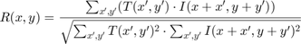

Template Matching
This program demonstrates template match with mask.
In this demo, we show how to:
- Use the OpenCV function cv.matchTemplate to search for matches between an image patch and an input image
- Find the maximum and minimum values (as well as their positions) in a given array.
Sources:
- https://github.com/opencv/opencv/blob/3.2.0/samples/cpp/mask_tmpl.cpp
- https://docs.opencv.org/3.2.0/d4/dc6/tutorial_py_template_matching.html
- https://docs.opencv.org/3.2.0/de/da9/tutorial_template_matching.html
- https://github.com/opencv/opencv/blob/3.2.0/samples/cpp/tutorial_code/Histograms_Matching/MatchTemplate_Demo.cpp
Contents
Theory
Template matching is a technique for finding areas of an image that match (are similar) to a template image (patch).
While the patch must be a rectangle it may be that not all of the rectangle is relevant. In such a case, a mask can be used to isolate the portion of the patch that should be used to find the match.
For template matching to work, we need two primary components:
- Source image (I): The image in which we expect to find a match to the template image
- Template image (T): The patch image which will be compared to the template image
our goal is to detect the highest matching area:

To identify the matching area, we have to compare the template image against the source image by sliding it:

By sliding, we mean moving the patch one pixel at a time (left to right, up to down). At each location, a metric is calculated so it
represents how "good" or "bad" the match at that location is (or how similar the patch is to that particular area of the source
image). For each location of T over I, you store the metric in the result matrixR. Each location  in R contains the match metric:
in R contains the match metric:

the image above is the result R of sliding the patch with a metric CCorrNormed. The brightest locations indicate the highest matches. As you can see, the location marked by the red circle is probably the one with the highest value, so that location (the rectangle formed by that point as a corner and width and height equal to the patch image) is considered the match.
In practice, we locate the highest value (or lower, depending of the type of matching method) in the R matrix, using the min, max, and find functions.
If masking is needed for the match, three components are required:
- Source image (I): The image in which we expect to find a match to the template image
- Template image (T): The patch image which will be compared to the template image
- Mask image (M): The mask, a grayscale image that masks the template
Only two matching methods currently accept a mask: SqDiff and CCorrNormed (see below for explanation of all the matching methods available in opencv).
The mask must have the same dimensions as the template. The mask should have a uint8 or single depth and the same number of channels as the template image. In uint8 case, the mask values are treated as binary, i.e. zero and non-zero. In single case, the values should fall into [0..1] range and the template pixels will be multiplied by the corresponding mask pixel values. Since the input images in the sample are 3-channels, the mask is also read as color image.

OpenCV implements template matching in the function cv.matchTemplate. There are six available methods:
- Method = SqDiff
- Method = SqDiffNormed
- Method = CCorr
- Method = CCorrNormed

- Method = CCoeff
where
and
- Method = CCoeffNormed
Code
This program:
- Loads an input image, an image patch (template), and optionally a mask
- Perform a template matching procedure by using the OpenCV function cv.matchTemplate with any of the 6 matching methods described before. The user can choose the desired method. If a mask is supplied, it will only be used for the methods that support masking
- Localize the location with higher matching probability
- Draw a rectangle around the area corresponding to the highest match
Load Images
if mexopencv.isOctave() img = cv.imread(fullfile(mexopencv.root(),'test','lena_tmpl.jpg')); tmpl = cv.imread(fullfile(mexopencv.root(),'test','tmpl.png')); mask = cv.imread(fullfile(mexopencv.root(),'test','mask.png'), 'Color',true); assert(isequal(size(tmpl), size(mask))); opts = {'Mask',mask}; else img = imread(which('peppers.png')); tmpl = imread(which('onion.png')); opts = {}; end
Template Matching
method = 'CCorrNormed'; % 'SqDiff' res = cv.matchTemplate(img, tmpl, 'Method',method, opts{:}); surf(res), shading flat title('normalized cross correlation')
Find global optimum in result
switch method case {'SqDiff', 'SqDiffNormed'} [val,idx] = min(res(:)); otherwise [val,idx] = max(res(:)); end if true [y,x] = ind2sub(size(res), idx); else [y,x] = find(res == val); end [h,w,~] = size(tmpl); rect = [x y w h];
Display matched area
out = cv.rectangle(img, rect, 'Color',[0 255 0], 'Thickness',2); figure subplot(221), imshow(img), title('image') subplot(222), imshow(tmpl), title('template') subplot(223), imshow(res,[]), title({'matching result', method}) subplot(224), imshow(out), title('detected template')